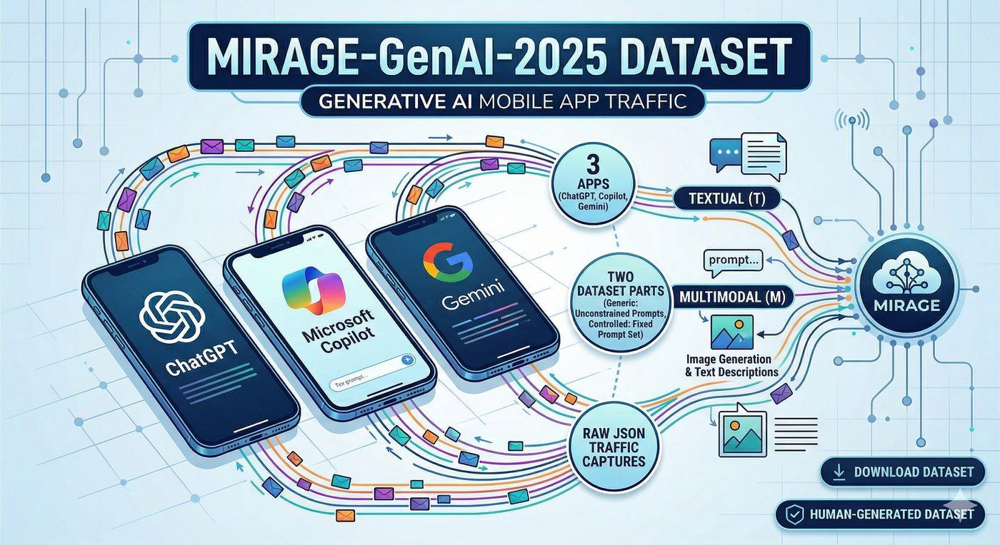

MIRAGE-GenAI-2025
Traffic of 3 popular Generative AI mobile apps (ChatGPT, Copilot and Gemini), labeled with both the app and the generative activity performed.
MIRAGE-GenAI-2025 includes the traffic generated by human experimenters using 3 popular Generative AI chatbots via their mobile apps: ChatGPT, Microsoft Copilot and Google Gemini.
The dataset is structured in two distinct parts: a generic dataset generated via unconstrained prompts and a controlled dataset generated using a fixed prompt set. Each app was used to perform two specific activities: Textual (T) and Multimodal (M) content generation. The latter primarily encompasses image generation accompanied by brief textual descriptions.
The dataset is released in JSON format, making available the raw traffic data captured.
Hosted on Zenodo ↗ · DOI 10.5281/zenodo.23158569

- Apps
- 3
- Activities
- Textual, Multimodal
- Format
- JSON
Apps and activities
3 apps in the downloadable release.
-
ChatGPT
com.openai.chatgptGoogle Play ↗ -
Microsoft Copilot
com.microsoft.copilotGoogle Play ↗ -
Google Gemini
com.google.android.googlequicksearchbox
Controlled prompt set
The controlled part of MIRAGE-GenAI-2025 was collected with a fixed set of 10 prompts, issued in the same way to every app. Choose an app to read the answers it gave.
01Factual question · Textual When was America discovered?
Prompt When was America discovered? Give me the response as plain text without images.
Answer · ChatGPT
America was discovered by Christopher Columbus in 1492.
Answer · Microsoft Copilot
America was discovered by European explorers in 1492 when Christopher Columbus, sailing under the Spanish flag, reached the Caribbean islands. However, indigenous peoples had lived in the Americas for thousands of years before Columbus arrived. The Vikings, led by Leif Erikson, are believed to have reached parts of North America around the year 1000, but their settlements were not permanent.
Answer · Google Gemini
The question of when America was "discovered" is complex, as people lived on the continent for thousands of years before Europeans arrived. However, from a European perspective:
- Christopher Columbus – Widely credited with the "discovery" of the Americas when he landed in the Caribbean on October 12, 1492. His voyages opened the way for widespread European exploration and colonization.
- Viking sailors – Notably Leif Erikson, believed to have established a short-lived settlement in Newfoundland, Canada, around the 11th century, centuries before Columbus.
- First humans – Arrived in the Americas from Asia much earlier, likely at least 15,000 years ago, and possibly much earlier.
02Technical explanation · Textual Describe the role of a router in a computer network and how it manages data traffic.
Prompt Describe the role of a router in a computer network and how it manages data traffic. Give me the response as plain text without images.
Answer · ChatGPT
A router is a networking device that connects multiple computer networks together, typically between a local network (like a home or office) and the internet. It acts as a traffic manager, directing data packets between devices and ensuring that information reaches its intended destination efficiently.
Role of a Router:
Interconnectivity: Routers connect different networks and manage traffic between them. For example, they allow your local network to communicate with the wider internet.
Path Selection: Routers determine the best path for data packets to travel, based on factors like destination IP addresses and network conditions.
Packet Forwarding: When a router receives a packet, it inspects the destination address, consults its routing table, and forwards the packet to the next network segment or the final destination.
Traffic Management: Routers can prioritize different types of traffic (e.g., video, voice, file downloads) using Quality of Service (QoS) settings to ensure critical applications get the necessary bandwidth.
Security: Many routers include features like firewalls, Network Address Translation (NAT), and sometimes even VPN support to protect the network from unauthorized access.
In summary, routers are essential components of a network, managing data flow, ensuring that packets arrive at the right place, and helping maintain efficient and secure communication between devices and networks..
Answer · Microsoft Copilot
A router is a crucial device in a computer network that directs data traffic between different networks. It connects multiple devices to the internet by forwarding data packets to their intended destinations. Routers analyze network addresses and determine the best path for data to travel, ensuring efficient communication between devices.
Routers use routing tables and protocols to manage traffic, preventing congestion and optimizing speed. They also provide security features such as firewall protection and network address translation (NAT), which help safeguard connected devices from external threats. Overall, routers play a vital role in maintaining a stable and secure network environment.
.
Answer · Google Gemini
A router is a networking device that connects multiple computer networks and forwards data packets between them. Its primary role is to direct data traffic efficiently and ensure that information reaches its intended destination. Here's how it manages data traffic:
- Connecting Networks – Acts as a central hub for different networks, such as your home local area network (LAN) and the internet (wide area network - WAN). It has multiple interfaces, each connected to a different network.
- Packet Inspection – When a router receives a packet, it inspects the packet's header, which contains crucial information like the source IP address and the destination IP address.
- Routing Table – Maintains a “routing table,” a map of the network containing information about different network paths and the next hop a packet should take to reach its destination. These paths can be configured manually (statically) or learned automatically (dynamically) using routing protocols such as OSPF or BGP.
- Forwarding Decisions – Based on the destination IP address and its routing table, the router determines the most efficient path for the packet and sends it through the appropriate interface.
- Network Address Translation (NAT) – In home networks, routers often perform NAT, allowing multiple devices with private IP addresses to share a single public IP address when accessing the internet. NAT translates between private and public IPs for both outgoing and incoming packets.
- Firewall Capabilities – Many routers can filter traffic based on predefined rules, blocking unauthorized access and protecting the network from malicious attacks.
- Quality of Service (QoS) – Some routers can prioritize certain types of traffic (e.g., video streaming or voice calls) to ensure smooth performance for critical applications during network congestion.
In essence, a router acts like a traffic controller on a complex road system, reading the destination address on each data packet and directing it onto the correct network path to reach its destination smoothly and efficiently.
03General knowledge · Textual Can you tell me what the most popular or commonly eaten foods in Italy are?
Prompt Can you tell me what the most popular or commonly eaten foods in Italy are? Give me the response as plain text without images.
Answer · ChatGPT
Sure! Italy is famous for its rich and diverse culinary traditions. Here are some of the most popular and commonly eaten foods in Italy:
- Pasta: Italy’s iconic dish comes in countless varieties, such as spaghetti, penne, fusilli, and tagliatelle, often served with sauces like tomato-based ragù, carbonara, or pesto.
- Pizza: Another beloved staple, with countless regional styles. The classic Neapolitan pizza with tomato sauce, mozzarella, and basil is especially popular.
- Risotto: A creamy rice dish cooked with broth, often flavored with ingredients like saffron (as in Risotto alla Milanese), mushrooms, or seafood.
- Polenta: A cornmeal dish common in the north, served creamy or grilled, sometimes topped with cheese or meat sauces.
- Bread: Italians love their bread, including ciabatta, focaccia, and pane toscano (Tuscan bread).
- Cheese: Italy is home to many famous cheeses, such as Parmigiano-Reggiano, mozzarella, gorgonzola, and pecorino.
- Prosciutto and Salumi: Cured meats like prosciutto crudo, salami, and mortadella are commonly eaten as appetizers or in sandwiches.
- Gelato: Italy’s traditional, dense, and flavorful ice cream is a popular dessert.
- Coffee: Especially espresso, enjoyed throughout the day and often after meals.
- Olive Oil: Used in cooking and as a dressing, high-quality extra-virgin olive oil is a key part of Italian cuisine.
These foods represent just a slice of Italy’s culinary heritage, but they’re certainly among the most popular and commonly eaten throughout the country.
Answer · Microsoft Copilot
Italy is famous for its rich culinary traditions, and some of the most popular and commonly eaten foods include:
- Pizza: A national symbol, originally from Naples, with variations like Margherita and Marinara.
- Pasta: A staple food with countless varieties, including spaghetti, penne, and tagliatelle, often served with sauces like carbonara, amatriciana, and pesto.
- Risotto: A creamy rice dish, especially popular in northern Italy, with variations like risotto alla Milanese.
- Lasagne: Layers of pasta, béchamel sauce, and ragù, originating from Bologna.
- Gnocchi: Small potato dumplings, often served with tomato sauce, pesto, or butter and sage.
- Arancini: Sicilian rice balls stuffed with ragù, cheese, and peas, then deep-fried.
- Focaccia: A flatbread from Liguria, often topped with olive oil, rosemary, or other ingredients.
- Prosciutto: Dry-cured ham, particularly Prosciutto di Parma, enjoyed as an appetizer or in sandwiches.
- Parmigiano Reggiano: A hard, aged cheese from northern Italy, used in many dishes.
- Gelato: Italian-style ice cream, known for its creamy texture and intense flavors.
- Tiramisu: A famous dessert made with layers of coffee-soaked biscuits, mascarpone cheese, and cocoa.
- Ribollita: A Tuscan soup made with bread, beans, and vegetables.
- Polenta: A cornmeal-based dish, often served with meats or cheeses.
- Pesto alla Genovese: A basil-based sauce from Liguria, made with pine nuts, garlic, Parmesan, and olive oil.
- Cannoli: Sicilian pastries filled with sweet ricotta cheese.
These dishes represent the diversity and richness of Italian cuisine, with each region offering its own specialties and variations. Buon appetito!
Answer · Google Gemini
Italian cuisine is incredibly diverse and varies greatly by region, but some dishes are universally loved and widely consumed across the country. Here are some of the most popular and commonly eaten foods in Italy:
- Spaghetti alla Carbonara – A Roman classic made with eggs, Pecorino Romano cheese, guanciale (cured pork jowl), and black pepper.
- Cacio e Pepe – Another simple yet incredibly flavorful Roman pasta dish with Pecorino Romano cheese and black pepper.
- Lasagna – Layers of pasta, ragù (meat sauce), béchamel sauce, and Parmesan cheese, often associated with Bologna.
- Tagliatelle al Ragù (Bolognese) – Broad flat pasta served with a rich, slow-cooked meat sauce.
- Gnocchi – Soft, doughy dumplings often made from potato, served with various sauces like pesto, tomato, or butter and sage.
- Pasta al Pomodoro / Spaghetti al Pomodoro – Simple yet essential pasta with a fresh tomato sauce, often with basil.
- Aglio e Olio – Pasta with garlic and olive oil, sometimes with a touch of chili.
- Pizza Napoletana (Neapolitan Pizza) – Famous for its thin, soft, and chewy crust with simple toppings like Margherita (tomato, mozzarella, basil).
- Focaccia – A flat oven-baked bread, often seasoned with olive oil, salt, and herbs, and sometimes topped with vegetables.
- Bruschetta – Grilled bread rubbed with garlic, topped with olive oil, and often fresh tomatoes and basil.
- Risotto – A creamy rice dish cooked in broth, with many variations including Risotto alla Milanese (with saffron), mushroom risotto, or seafood risotto.
- Arancini – Fried rice balls, typically from Sicily, often filled with ragù, mozzarella, and peas.
- Bistecca alla Fiorentina – A thick-cut, grilled T-bone steak, typically served rare, from Tuscany.
- Ossobuco – Braised veal shanks cooked with vegetables, white wine, and broth, often from Milan.
- Melanzane alla Parmigiana – Layers of fried or baked eggplant with tomato sauce, mozzarella, and Parmesan cheese.
- Gelato – Italian ice cream, known for its intense flavors and denser, creamier texture than regular ice cream.
- Tiramisu – A coffee-flavored dessert made with layers of ladyfingers dipped in coffee, mascarpone cheese, eggs, and cocoa powder.
- Cannoli – Crispy fried pastry shells filled with a sweet, creamy ricotta cheese filling, a specialty of Sicily.
This list barely scratches the surface, as every region and even every town in Italy has its own unique culinary traditions and beloved dishes. However, these are some of the most iconic and frequently enjoyed Italian foods.
04Arithmetic · Textual What is 20 percent of 2025?
Prompt What is 20 percent of 2025? Give me the response as plain text without formulas or images.
Answer · ChatGPT
20 percent of 2025 is 405.
Answer · Microsoft Copilot
20 percent of 2025 is 405.
Answer · Google Gemini
405.
05Code generation · Textual Write a "Hello, World!" program in C.
Prompt Write a "Hello, World!" program in C. Give me the response as plain text without images
Answer · ChatGPT
#include <stdio.h>
int main() {
printf("Hello, World!\n");
return 0;
}Answer · Microsoft Copilot
Sure! Here is a simple "Hello, World!" program in C:
#include <stdio.h>
int main() {
printf("Hello, World!\n");
return 0;
}This program:
This program includes the standard input-output library <stdio.h>,
defines the main function, and uses printf to print
"Hello, World!" to the console. The \n ensures the output
moves to a new line after printing. Happy coding!
Answer · Google Gemini
#include <stdio.h>
int main() {
printf("Hello, World!\n");
return 0;
}06Up-to-date information · Textual What cultural events are happening this month in Naples and Tokyo?
Prompt What cultural events are happening this month in Naples and Tokyo? Give me the response as plain text without images.
Answer · ChatGPT
Certainly! Here are some notable cultural events happening in Naples and Tokyo during June 2025:
Naples – June 2025 Cultural Highlights
- Naples 2500th Anniversary Celebrations: Naples commemorates 2,500 years of history with a series of events, art installations, and performances, particularly at the Real Albergo dei Poveri.
- Napoli Teatro Festival Italia: An international theater festival featuring plays, exhibitions, and performances by artists from around the world.
- Noisy Naples Fest 2025: A music festival spanning June and July, showcasing a diverse range of musical genres and performances across the city.
- Naples Conference on Cultural Heritage: Organized by UNESCO, this conference focuses on cultural heritage in the 21st century, held at Castel Capuano from June 4 to 6.
- Sunday at the Museum – June 1: On the first Sunday of June, state museums and archaeological parks in Naples offer free entry to visitors.
Tokyo – June 2025 Cultural Highlights
- Torigoe Matsuri (June 6–8): A traditional festival featuring the procession of one of Tokyo's largest portable shrines (mikoshi), accompanied by music and festivities.
- Tokyo Umeshu Festival (June 5–8): An event celebrating Japanese plum wine, offering tastings of over 100 varieties, along with food pairings and cultural activities.
- Hydrangea Festivals: Seasonal festivals celebrating the blooming of hydrangeas at locations like Takahata Fudōson Temple and Kamakura Hasedera Temple.
- Sannō Matsuri: One of Tokyo's major Shinto festivals, featuring a week-long series of events and, in even-numbered years, a grand procession through central Tokyo.
- Joan Jonas Exhibition: An art exhibition at Pace Gallery Tokyo showcasing the drawings of performance artist Joan Jonas, inspired by Japanese folklore and nature.
If you're interested in more details about any of these events or need assistance with planning your visit, feel free to ask!
Answer · Microsoft Copilot
Certainly! Here are some cultural events happening in Naples and Tokyo in June 2025:
Naples
- Echoes of Naples: A Theatrical Tribute – A series of performances celebrating Naples' rich history and legends, featuring dramatic storytelling and traditional music.
- UNESCO Naples Conference – A gathering focused on cultural heritage preservation, engaging young professionals in discussions about safeguarding traditions.
- Naples Pride Fest – A vibrant celebration of LGBTQ+ rights with parades, performances, and community events.
- Napoli Film Festival – A showcase of independent films, particularly highlighting Mediterranean and Neapolitan filmmakers.
- Pompeii Theatrum Mundi – A theatrical festival set in the ancient ruins of Pompeii, featuring performances inspired by historical themes.
- Feast of the Gigli of Nola – A traditional festival with processions, music, and towering wooden structures carried through the streets.
- Andrea Bocelli Concert in Pompeii – A special performance by the renowned tenor in a historic setting.
Tokyo
- Torigoe Festival – A Shinto festival featuring the largest portable shrine in Tokyo, with lively processions and illuminated lanterns.
- Hydrangea Festivals – Various locations across Tokyo celebrate the blooming of hydrangeas, including Hakusan Shrine and Kamakura Hasedera Temple.
- Tsukiji Lion Dance Festival – A unique event featuring giant lion heads carried alongside portable shrines.
- Firefly Festivals – Special events where visitors can witness glowing fireflies in natural settings.
- Candle Night for 1 Million People – A peaceful event where Tokyo Tower and surrounding buildings turn off their lights, replaced by thousands of candles.
- Vietnam Festival – A cultural exchange event featuring Vietnamese cuisine, performances, and traditional crafts.
- Tokyo Pride – A major LGBTQ+ event with parades and festivities in Yoyogi Park.
- Oku Asakusa Bon Odori Festival – A traditional dance festival where participants form circles around a decorated scaffold.
These events offer a mix of tradition, art, and celebration, making June an exciting month in both cities.
Answer · Google Gemini
Here's a look at some cultural events happening in Naples, Italy, and Tokyo, Japan, this month (June 2025):
Naples, Italy
- Pino Daniele. Spiritual. Exhibition – Celebrates the life and work of the beloved Neapolitan musician and songwriter, Pino Daniele. Features personal items, musical instruments, videos, and never-before-seen documents. Hosted in the Plebiscito and Belvedere Rooms of the Royal Palace of Naples, March 20 – July 6, 2025.
- Republic Day Free Museums and Tours – On June 1 and 2, many museums in Naples will offer free admission, including the Royal Palace of Naples, the National Archaeological Museum, the Museum and Royal Park of Capodimonte, and Castel Sant'Elmo. Guided tours available in the Spanish Quarters and the Sanità district.
- Naples Celebrates 2,500 Years of History – Year-long milestone celebration with special June events at the Real Albergo dei Poveri, including the play Pinocchio (June 8) at Teatro Mercadante and the Roots and Migrations cultural project (June 21 – July 5) at the Naples Lighthouse.
- Campania Teatro Festival – June 13 – July 13, the 18th edition of this multidisciplinary festival with over 150 events, including many premieres, in theaters and venues such as Maschio Angioino and the Royal Palace.
- Napulitanata – Musical performances throughout June, often featuring traditional Neapolitan music and songs.
Tokyo, Japan
- Torigoe Matsuri – June 7–9 near Torigoe Shrine, featuring a massive four-tonne mikoshi (portable shrine) paraded through the streets, with the main event on June 8.
- Tokyo Pride Parade and Festival – June 7–8 at various locations, including Yoyogi Park. Includes a Queer Art Exhibition (June 6–18) at BABY THE COFFEE BREW CLUB GALLERY ROOM/ART STREET.
- The Art of the RAMEN Bowl Exhibition – Until June 15, 2025, at 21_21 Design Sight.
- Katsushika Iris Festival – May 26 – June 15, 2025, at Horikiri Shobukoen Garden, featuring around 6,000 iris plants.
- Tsukiji Lion Dance Festival – Held at Namiyoke Inari Shrine, June 7–9, 2025.
- Hydrangea Festivals – Includes Bunkyo Ajisai Festival (June 7–15) at Hakusan Shrine with 3,000+ hydrangeas, and Wonderful Nature Village Hydrangea Festival (June 7 – July 6).
- Isao Takahata Exhibition — The Man Who Planted Japanese Animation – June 27 – September 15, 2025, at Azabudai Hills Gallery, celebrating the Studio Ghibli co-founder.
- Ando Teru Exhibition: The Sculptor of The Hachiko Statue – June 21 – August 17 at The Shoto Museum of Art, marking 80 years since his death.
- Nagoshi-no-Oharae Ceremony – Traditional Shinto purification ritual held at many shrines across Japan around June.
07Scientific writing · Textual Write an abstract for a research paper that proposes an innovative technique for network traffic classification. The abstract should clearly describe the…
Prompt Write an abstract for a research paper that proposes an innovative technique for network traffic classification. The abstract should clearly describe the problem, the proposed solution, and its advantages over existing methods. Give me the response as plain text without images.
Answer · ChatGPT
Network traffic classification is a fundamental task in modern communication systems, essential for security monitoring, quality-of-service enforcement, and network management. Traditional approaches rely heavily on predefined feature sets, deep packet inspection, or machine learning models that often require substantial labeled data and struggle with encrypted or obfuscated traffic. In this paper, we propose a novel technique for network traffic classification based on a self-supervised contrastive learning framework that leverages temporal and statistical characteristics of traffic flows. Our approach eliminates the dependency on large labeled datasets by learning robust, domain-invariant representations from unlabeled traffic, while effectively capturing complex temporal dependencies through transformer-based architectures. Extensive experiments on real-world datasets demonstrate that our method outperforms existing supervised and semi-supervised baselines in terms of accuracy, robustness to encryption, and adaptability to unseen traffic patterns. This research provides a scalable and adaptable solution to the challenges of modern network traffic classification, paving the way for more secure and efficient network management.
Answer · Microsoft Copilot
Abstract: Accurate network traffic classification is essential for optimizing network management, enhancing security, and ensuring efficient resource allocation. Traditional classification methods rely on port-based and deep packet inspection techniques, which struggle to handle encrypted and dynamically changing traffic patterns. This paper proposes an innovative approach utilizing deep learning-based feature extraction combined with adaptive clustering to classify network traffic efficiently and accurately. By leveraging neural networks to identify hidden patterns in flow characteristics, our technique surpasses conventional methods in robustness against encryption and real-time adaptability. Comparative analysis demonstrates that our model achieves higher classification accuracy while requiring less manual intervention and computational overhead. The proposed solution offers significant improvements for network operators, security analysts, and researchers seeking scalable and intelligent traffic classification frameworks.
Answer · Google Gemini
Abstract
Accurate and efficient network traffic classification is crucial for effective network management, security, and quality of service provisioning. Traditional classification methods, often reliant on port numbers or deep packet inspection, face significant challenges due to increasing traffic encryption, dynamic port assignments, and the computational overhead of payload analysis. This paper proposes an innovative machine learning-based technique for network traffic classification that addresses these limitations. Our solution leverages flow-level statistical features and behavioral patterns rather than inspecting packet content. By analyzing attributes such as packet inter-arrival times, packet sizes, and flow duration, the proposed model can accurately identify application types and differentiate between legitimate and malicious traffic even when encrypted. This approach offers several advantages over existing methods, including enhanced privacy protection by avoiding payload inspection, improved scalability due to reduced computational complexity, and superior adaptability to evolving network protocols and encrypted traffic. Experimental results demonstrate that our technique achieves high classification accuracy and significantly outperforms conventional methods in real-world network environments.
08Translation · Textual Translate the following text into Italian: When I was little, our family traveled to Madagascar, and it was an unforgettable experience. We saw lemurs in the…
Prompt Translate the following text into Italian: When I was little, our family traveled to Madagascar, and it was an unforgettable experience. We saw lemurs in the trees, chameleons camouflaged among the leaves, and giant baobabs towering over the landscape. We went on a guided walk in the afternoon heat, and many animals were resting in the shade. Back home in rural Ireland, the view is completely different — we’re used to seeing sheep, cows, and chickens outside our window.
Answer · ChatGPT
Quando ero piccolo, la nostra famiglia ha viaggiato in Madagascar ed è stata un’esperienza indimenticabile. Abbiamo visto i lemuri sugli alberi, i camaleonti mimetizzati tra le foglie e i giganteschi baobab che dominavano il paesaggio. Abbiamo fatto una passeggiata guidata nel caldo pomeriggio e molti animali riposavano all’ombra. Tornati a casa, nella campagna irlandese, il panorama è completamente diverso: siamo abituati a vedere pecore, mucche e galline fuori dalla finestra.
Answer · Microsoft Copilot
Quando ero piccolo, la nostra famiglia ha viaggiato in Madagascar ed è stata un'esperienza indimenticabile. Abbiamo visto lemuri sugli alberi, camaleonti mimetizzati tra le foglie e giganteschi baobab che svettavano sul paesaggio. Abbiamo fatto una passeggiata guidata nel caldo pomeridiano, e molti animali riposavano all'ombra. Tornati a casa, nella campagna irlandese, la vista è completamente diversa — siamo abituati a vedere pecore, mucche e galline fuori dalla finestra.
Answer · Google Gemini
Quando ero piccolo, la nostra famiglia viaggiò in Madagascar, ed è stata un'esperienza indimenticabile. Abbiamo visto lemuri sugli alberi, camaleonti mimetizzati tra le foglie e baobab giganti che dominavano il paesaggio. Abbiamo fatto una passeggiata guidata nel caldo pomeridiano, e molti animali riposavano all'ombra. Tornati a casa nell'Irlanda rurale, il panorama è completamente diverso — siamo abituati a vedere pecore, mucche e galline fuori dalla nostra finestra.
09Summarization · Textual Summarize the following text in exactly two sentences: Last month, at a lab in Santa Barbara, Calif., a team of Google researchers reached a milestone that…
Prompt Summarize the following text in exactly two sentences: Last month, at a lab in Santa Barbara, Calif., a team of Google researchers reached a milestone that some compared to the first flight at Kitty Hawk. They reached “quantum supremacy,” building a quantum computer that needed only 3 minutes 20 seconds to perform a calculation that today’s computers couldn’t finish in 10,000 years. It was one of the most interesting — and perhaps one of the most important — technological developments of the year. The trouble is that no one can really explain what it is that Google built, at least not in a way that mere mortals can understand. The first thing you need to know is that a quantum computer is experimental technology. It won’t be ready for prime time for several more years, if not more. But experts believe it will eventually make today’s computers look like toys, handling tasks that would never be possible with traditional machines. It will do this by harnessing the power of quantum mechanics, which is the strange behavior exhibited by things like electrons or particles of light or exotic metals cooled to several hundred degrees below zero. Describing this strange behavior is difficult, because it is unlike anything any of us have ever experienced. If any of us actually looked at the fundamental building block of a quantum computer, called a qubit, it would cease to be a qubit.
Answer · ChatGPT
Last month, Google researchers in California achieved "quantum supremacy," demonstrating a quantum computer that could perform a calculation in minutes that would take today's computers 10,000 years. However, the technology is still experimental and years away from practical use, and its underlying quantum mechanics are difficult for most people to understand.
Answer · Microsoft Copilot
Google researchers achieved "quantum supremacy" by developing a quantum computer that completed a complex calculation in just over three minutes, something traditional computers would take 10,000 years to solve. While this breakthrough demonstrates the immense potential of quantum computing, the technology remains experimental and difficult to explain, relying on the strange principles of quantum mechanics.
Answer · Google Gemini
Last month, Google researchers achieved "quantum supremacy" by building a quantum computer capable of completing a calculation in 3 minutes and 20 seconds that would take traditional computers 10,000 years. This experimental technology, though not yet ready for widespread use, is expected to revolutionize computing by harnessing quantum mechanics to tackle tasks currently impossible for conventional machines.
10Image generation · Multimodal Give me an illustration of a person surfing on a wave in the ocean. The scene should show a sunny sky, blue water, and the surfer riding a wave with balance…
Prompt Give me an illustration of a person surfing on a wave in the ocean. The scene should show a sunny sky, blue water, and the surfer riding a wave with balance and energy.
Answer · ChatGPT
Here is the illustration you requested.
Answer · Microsoft Copilot
Here's your illustration of a person surfing on a wave in the ocean, with a bright sunny sky and energetic movement—hope you like it! 🌊🏄♂️
Answer · Google Gemini
Here's an illustration of a person surfing on a wave in the ocean:
How to cite
If you use MIRAGE-GenAI-2025 for scientific papers, academic lectures, project reports or technical documents, please help us increase its impact by citing:
Antonio Montieri, Alfredo Nascita, Antonio Pescapè, “From Prompts to Packets: A View from the Network on ChatGPT, Copilot, and Gemini”, Computer Networks, 2026, 112237, ISSN 1389-1286.
To cite the dataset itself:
Montieri, A., Nascita, A., & Pescapè, A. (2026). MIRAGE-GenAI-2025 [Data set]. Zenodo. https://doi.org/10.5281/zenodo.23158569